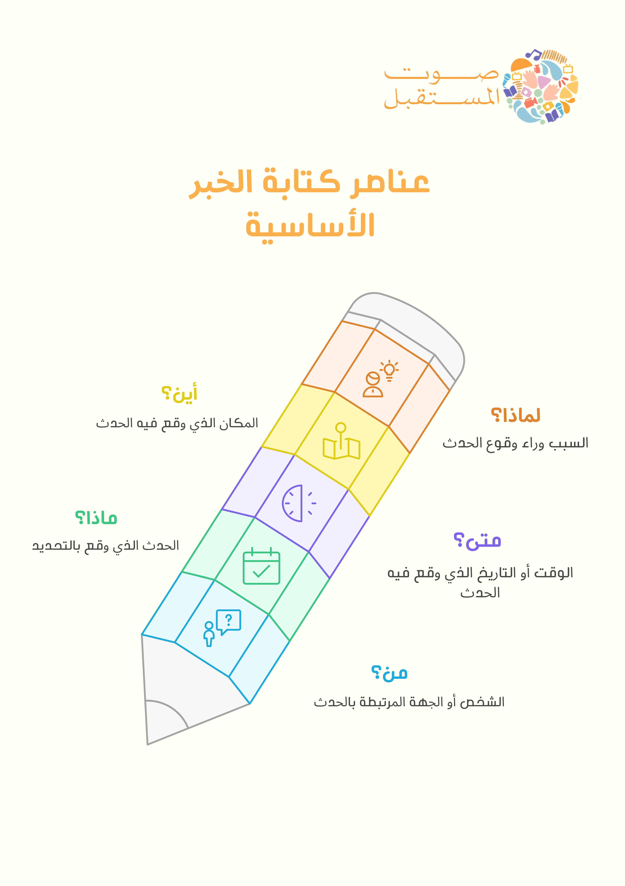
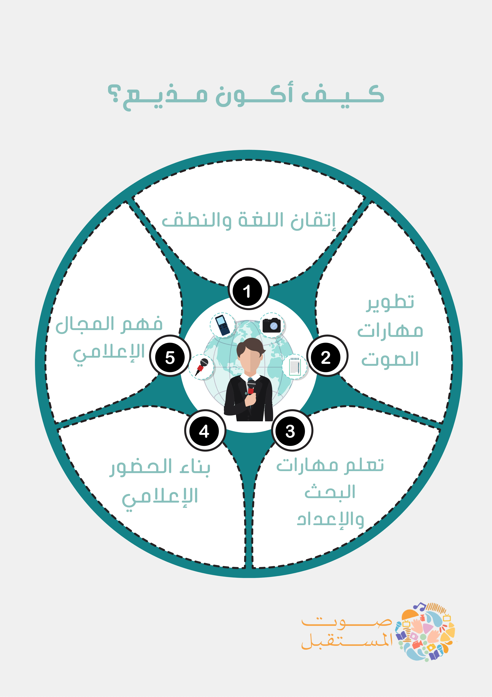
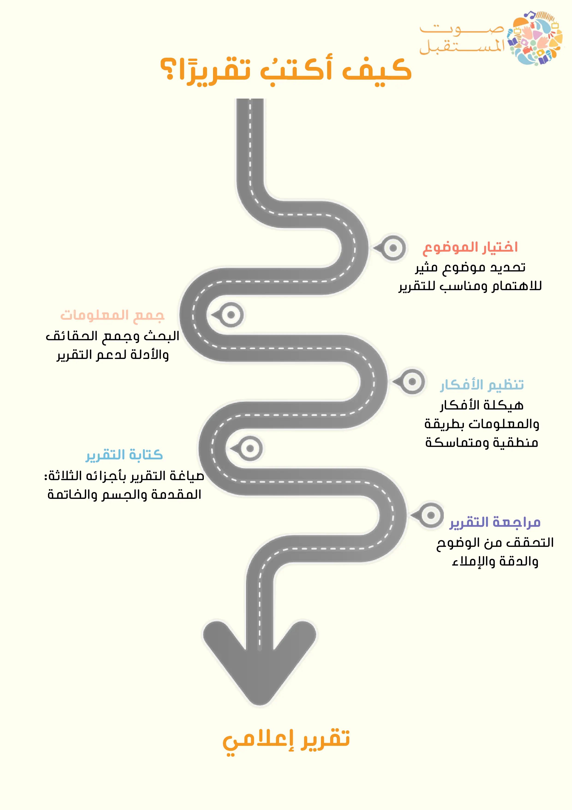

المشاركات والفعاليات
استخرج العناصر الأساسية من الخبر الآتي:
نظمت المدرسة الابتدائية بالمدينة رحلة علمية يوم الخميس الماضي إلى متحف العلوم، حيث شارك في الرحلة جميع طلاب الصفوف العليا مع معلميهم. هدفت الرحلة لتعريف الطلاب على تجارب علمية ممتعة وتشجيع حب الاستكشاف. و استمتع الطلاب بمشاهدة المعروضات والتجارب العملية وتعلموا الكثير عن العلوم بطريقة ممتعة.

أولًا: كتابة الخبر البسيط
الخبر هو أساس العمل الإعلامي، وهو نقل معلومة جديدة تهم الناس وتجيب عن الأسئلة الخمسة: من؟ ماذا؟ متى؟ أين؟ ولماذا؟
يتعلم الطفل في هذا القسم كيفية كتابة خبر قصير عن حدث في مدرسته أو مجتمعه الصغير بلغة سهلة وواضحة، مع التركيز على الدقة والاختصار.
خطوات كتابة الخبر:
- تحديد الحدث الذي يريد الكتابة عنه.
- جمع المعلومات من مصدر موثوق مثل المعلم أو المشرف أو من عايش الحدث.
- كتابة الجمل الأولى التي تجيب عن الأسئلة الأساسية.
- ترتيب الجمل بحيث تبدأ بالمعلومة الأهم ثم التفاصيل الثانوية.
- مراجعة النص والتأكد من وضوحه وصحته اللغوية.
نشاط تطبيقي:
يُطلب من الطفل أن يكتب خبرًا بسيطًا عن فعالية في المدرسة أو نشاط شارك فيه، مع مراعاة العناصر الأساسية للخبر.

ابدأ تجربة المذيع
استعد لتأدية دور المذيع!
اقرأ الخبر المعروض أمامك بصوت واضح، ثم اضغط زر التسجيل لتشاركنا قراءتك.
العنوان: عاجل: الدفاع المدني يحذر من عاصفة في المدينة
الخبر: أصدر الدفاع المدني اليوم تحذيرًا من عاصفة قوية متوقعة في المدينة خلال الساعات القادمة. ودعوا الجميع إلى البقاء في المنازل وتجنب الخروج إلا للضرورة، وتوخي الحذر من الرياح القوية والأمطار الغزيرة.

بعد أن تعلّمنا خطوات كتابة التقرير، حان الوقت لتطبيق ما تعلمناه!
اختر أي موضوع يثير اهتمامك، أو تشعر بالحماس للكتابة عنه. سواء كان عن تجربة مررت بها، أو رحلة قمت بها، أو نشاط تحبه، أو حتى عن شخصية تعجبك.
ثم ابدأ بكتابة تقريرك باتباع الخطوات التي تعلمناها، وعند الانتهاء، شارك تقريرك معنا لنستفيد من آراء الآخرين، ونشجع زملاءك على التعبير عن أفكارهم أيضًا.
أعمال الأطفال في الصحافة

هذه المساحة تعرض مشاركات الأطفال من صور، تقارير، ونتاجات صحفية، لتعزيز مهاراتهم في الإعلام والإعلام.
مبادئ الصحافة والإعلام للأطفال

هذه المساحة مخصصة لعرض إبداعات الأطفال المشاركين، بما في ذلك الصور والتقارير والنتاجات الصحفية التي يعبرون فيها عن أفكارهم ويطورون مهاراتهم الإعلامية بشكل تفاعلي وممتع.
شارك مشاركتك
يمكنك مشاركة أعمالك الإعلامية معنا! ارفع تسجيل صوتي، مقال، انفوجرافيك، صورة، أو أي محتوى إعلامي آخر.
التعليقات